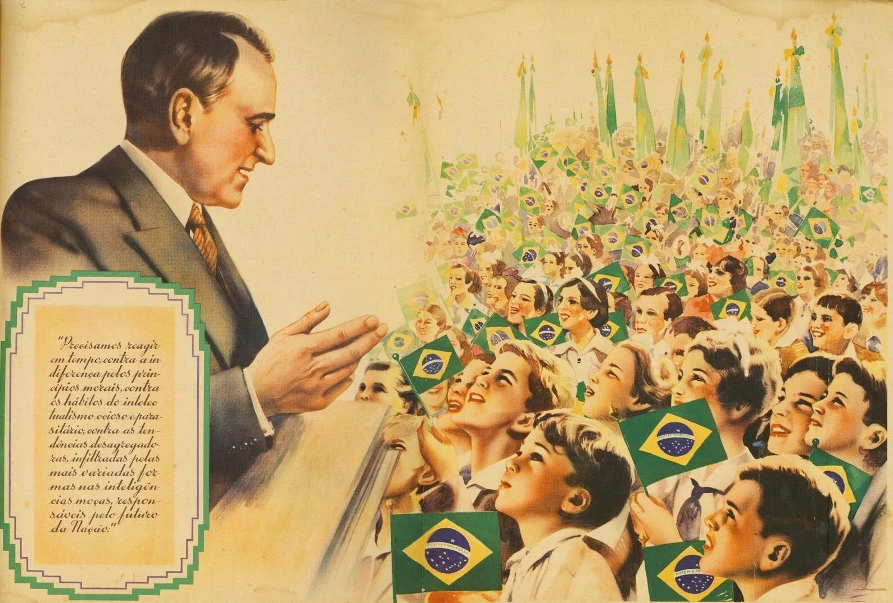
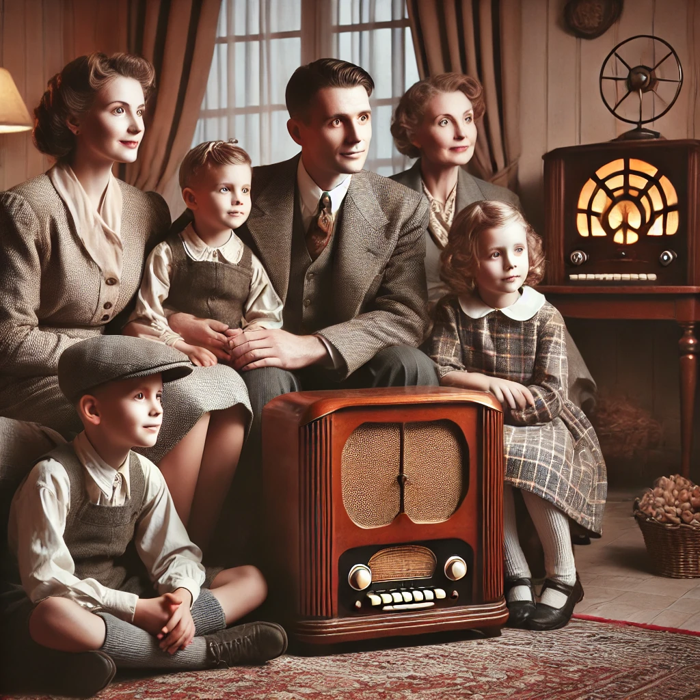
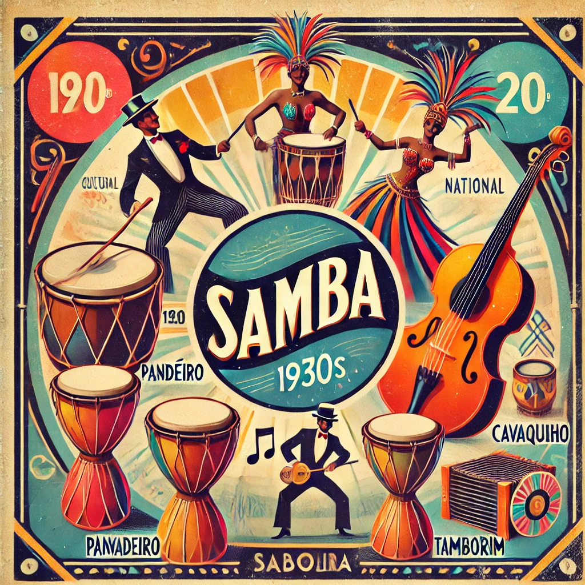

O História em Jogo é uma plataforma interativa criada especialmente para ajudar você a
explorar a história
do Brasil de uma maneira diferente, envolvente e cheia de curiosidade. Aqui, o conhecimento não está apenas
nos livros: ele está nos jogos, nas músicas e nas atividades que vão fazer você viver a história de perto.
Nosso foco é o período do Estado Novo e a forma como o samba, a música que embala nossa cultura, foi
utilizado como uma poderosa ferramenta para criar uma ideia de identidade nacional. Nesta plataforma, você
vai entender como Getúlio Vargas e seu governo moldaram a imagem do Brasil, transformando o samba em uma voz
oficial, ao mesmo tempo que muitas outras vozes foram silenciadas.
Por aqui, você encontrará:
Exploração Histórica: Contextos e explicações sobre como a história aconteceu, quais forças estavam em jogo
e como a cultura se transformou ao longo do tempo.
Canções e Cultura: Análise crítica de letras de samba da época, entendendo como elas ajudaram a promover
ideias do governo e a construir a identidade do nosso país.
Atividades Gamificadas: Jogos, quizzes e desafios para testar seu conhecimento e fazer com que você se sinta
parte da história que está sendo contada.
Nosso objetivo é tornar a história um processo ativo, no qual você, como estudante, se envolva de maneira
divertida e reflexiva, entendendo o passado para fazer perguntas sobre o presente.
Vamos começar? Explore, jogue, reflita, e aprenda de um jeito novo e interessante!
Estado Novo: Trabalhismo e Identidade Nacional
Bem-vindo ao "História em Jogo"! Nesta etapa, vamos explorar o Brasil durante o Estado
Novo (1937-1945).
Descubra como o governo Vargas utilizou o samba como uma poderosa ferramenta de propaganda para
construir uma identidade nacional e consolidar seu poder.
Prepare-se para refletir sobre como a música pode ser usada para unir e, ao mesmo tempo, silenciar
vozes.
1937
1937: O Início do Estado Novo
Getúlio Vargas discursando durante o início do Estado Novo, 1937.
Contextualização Histórica:
Em 1937, Getúlio Vargas
instaurou o
Estado Novo, um regime ditatorial que buscava centralizar o poder e promover
a
modernização do Brasil, mas com profundas restrições às liberdades civis e
políticas. Através do fechamento do Congresso Nacional, censura aos meios de
comunicação e repressão a movimentos sociais, Vargas tentou moldar uma
identidade nacional que destacasse a imagem de um país unido e próspero sob
sua
liderança.
Impactos Sociais e Culturais:
Nesse período, a música e o
rádio
foram fortemente utilizados pelo governo como ferramentas de propaganda.
Através
do samba, uma das mais populares expressões culturais da época, Vargas
buscou
construir uma narrativa de identidade nacional e integração social. Essa
construção, no entanto, excluía muitas vezes as realidades e dificuldades
das
classes trabalhadoras e da população negra. O samba, assim, tornou-se
simultaneamente um símbolo de resistência cultural e de cooptação pelo
Estado.

Getúlio Vargas: O "Pai dos Pobres" e a Propaganda do Estado Novo

Família reunida ao redor do rádio na década de 1930

Samba da Unidade Nacional
Trabalhismo e como o samba o influenciou
Durante o Estado Novo (1937-1945), o governo de Getúlio Vargas se apropriou do samba
como um elemento fundamental para promover a ideologia do trabalhismo. Getúlio
Vargas, que passou a ser chamado de "pai dos pobres", utilizou a música popular como
uma forma de reforçar sua imagem de protetor das classes trabalhadoras e de
incentivar um sentimento de unidade nacional.
O samba, que anteriormente era marginalizado e associado a classes mais baixas e a
elementos culturais afro-brasileiros, passou a ser institucionalizado e promovido
como símbolo da brasilidade. A mensagem transmitida pelas canções era de harmonia,
de uma nação unida e solidária, valores que estavam diretamente ligados ao ideal
trabalhista que o governo pretendia promover. Isso ajudou a criar uma imagem de um
país em que todos pertenciam a uma grande comunidade, liderada pelo governo que
"cuidava do povo".
Sambas-enredos como "Aquarela do Brasil", de Ary Barroso, foram amplamente
utilizados para propagar esses valores, celebrando a grandeza do Brasil e escondendo
as desigualdades. As letras frequentemente glorificavam o trabalhador e exaltavam o
papel do governo na condução de um futuro próspero para todos. A narrativa
construída pelo Estado, em colaboração com compositores e propagandistas, reforçava
o mito da igualdade racial e da integração social, mesmo em um contexto de
desigualdade gritante e exclusão racial.
Portanto, o samba, além de ser uma expressão cultural popular, se tornou uma
ferramenta política que ajudou a consolidar a ideologia trabalhista no imaginário da
população, contribuindo para legitimar o governo Vargas. A música foi um meio
poderoso de comunicação, por meio do qual se estabeleceu uma conexão direta com o
povo, utilizando uma linguagem familiar e emotiva que ajudava a promover a aceitação
das políticas estatais
Identidade Nacional
Durante o período do Estado Novo, de 1937 a 1945, o governo de Getúlio Vargas
empreendeu um esforço intenso para a construção de uma identidade nacional
brasileira que fosse inclusiva e orgulhosa das diferentes heranças culturais, mas
que, ao mesmo tempo, fosse controlada e alinhada aos interesses do regime. A ideia
de uma "identidade nacional" estava intrinsecamente ligada ao conceito de unificar o
Brasil por meio de símbolos culturais que pudessem ser reconhecidos por toda a
população, como o samba, o futebol e a figura do trabalhador.
O samba, que inicialmente era marginalizado e visto como uma expressão das
comunidades pobres e negras, passou a ser promovido como símbolo central da
identidade cultural brasileira. O governo buscou ressignificar o samba,
transformando-o em um emblema da brasilidade, um som que representava a diversidade
do país, mas também transmitia a imagem de um povo unido, alegre e trabalhador. Essa
promoção do samba como um símbolo nacional foi parte de um esforço maior de Vargas
para criar um sentimento de coesão e orgulho entre os brasileiros, consolidando a
figura de Vargas como "pai da nação".
Benedict Anderson, em seu clássico "Comunidades Imaginadas" (1983), argumenta que a
identidade nacional é uma construção cultural, uma "comunidade imaginada" que se
forma a partir de símbolos e narrativas compartilhadas. O Estado Novo utilizou essa
ideia, criando e promovendo a imagem de um Brasil coeso e integrado, onde a cultura
popular – especialmente o samba – desempenhava um papel fundamental na construção
dessa identidade. No entanto, é importante lembrar que essa identidade nacional
promovida pelo governo era seletiva e não refletia as realidades complexas e
diversas de toda a população. Elementos de exclusão e marginalização estavam
presentes, especialmente em relação às comunidades negras e pobres, cujas
dificuldades e desigualdades não eram reconhecidas na narrativa oficial.
Assim, a construção da identidade nacional no Estado Novo era, ao mesmo tempo, um
processo de integração e de controle. Ao promover o samba e outras manifestações
culturais como símbolos nacionais, o governo tentava dar uma aparência de unidade e
harmonia, escondendo as desigualdades profundas e os conflitos que existiam no
Brasil da época.
O Samba no Estado Novo: Identidade Nacional e Trabalhismo sob a Perspectiva de Vargas
A relação do samba com o trabalhismo e a identidade nacional durante o período do
Estado Novo foi estratégica e complexa. Getúlio Vargas, ao estabelecer o Estado Novo
em 1937, reconheceu o potencial do samba como um símbolo cultural capaz de unificar
a nação e promover a ideologia trabalhista que ele defendia. Assim, o samba, que até
então era marginalizado e associado a classes populares, passou a ser apropriado e
incentivado pelo governo para servir a objetivos políticos mais amplos.
Samba e Identidade Nacional:
Durante o Estado Novo, o
governo Vargas buscou criar
uma identidade nacional unificada, que representasse o Brasil como um país diverso,
harmonioso e integrado. O samba desempenhou um papel fundamental nesse processo. Ao
institucionalizar e legitimar o samba como símbolo nacional, o regime tentou
transformar uma expressão cultural das comunidades negras e periféricas em um
elemento central da cultura brasileira. Dessa forma, o samba foi promovido como um
emblema de brasilidade, refletindo a imagem de um povo alegre, resiliente e unido,
apesar das desigualdades sociais e raciais.
Benedict Anderson, em sua obra "Comunidades Imaginadas" (1983), fala sobre a
identidade nacional como uma construção cultural, algo que une indivíduos através de
símbolos e narrativas compartilhadas. O Estado Novo, de forma muito similar, usou o
samba para construir uma "comunidade imaginada" brasileira, que valorizava a
integração das diversas heranças culturais do país, ao mesmo tempo em que escondia
as desigualdades e as realidades das comunidades que eram as verdadeiras criadoras
do samba.
Samba e Trabalhismo:
Além de seu papel na
construção da identidade nacional, o samba
também foi instrumentalizado para promover o trabalhismo de Vargas. O conceito de
trabalhismo era central na política do Estado Novo, que buscava criar uma imagem
paternalista do governo como protetor e benfeitor dos trabalhadores. Nesse sentido,
Vargas passou a ser representado como o "pai dos pobres", e o samba contribuiu para
consolidar essa imagem. Letras de samba exaltavam o trabalhador, a figura de Vargas
e a ideia de que o Brasil estava progredindo sob a sua liderança. Esse tipo de
narrativa ajudava a fortalecer a ligação entre a classe trabalhadora e o governo,
promovendo a ideia de que o Estado era responsável pela proteção e pelo bem-estar do
trabalhador.
Ao incorporar o samba na propaganda oficial, o governo de Vargas não apenas
celebrava o samba como um símbolo da cultura nacional, mas também utilizava essa
música para transmitir mensagens trabalhistas. A alegria e a coletividade,
características tradicionais do samba, foram apropriadas para simbolizar um Brasil
em que todos estavam comprometidos com o progresso e o bem-estar coletivo, sob a
liderança de um governo paternalista. No entanto, essa narrativa muitas vezes
ocultava a realidade das desigualdades sociais, a repressão e a falta de liberdade
política que marcaram o período.
Em Sala de Aula:
O estudo da relação entre o
samba, o trabalhismo e a identidade
nacional durante o Estado Novo é extremamente relevante para o ensino de história,
pois permite aos alunos entender como a cultura pode ser instrumentalizada por
governos para promover determinadas ideologias e narrativas. Ao analisar letras de
samba da época, os estudantes podem refletir criticamente sobre a construção da
identidade nacional e sobre as estratégias de propaganda utilizadas por Vargas. O
objetivo é desenvolver uma visão crítica sobre como a cultura popular pode ser usada
tanto para unir quanto para controlar, destacando as contradições presentes na
tentativa de criar uma identidade nacional harmoniosa em um país marcado por
desigualdades profundas.
Assim, o samba durante o Estado Novo simbolizou um esforço de integração nacional e
de valorização do trabalhador, mas também refletiu o controle do Estado sobre a
cultura e a tentativa de promover uma imagem idealizada do Brasil, que ocultava as
desigualdades e as tensões sociais da época.
1945
Fim do Estado Novo e Seus Desdobramentos
Contexto Histórico:
Em 1945, o Brasil passou por mudanças
significativas com o
fim do Estado Novo, instaurado em 1937 por Getúlio Vargas. Este foi um período
de transição política que marcou o encerramento do regime autoritário de Vargas,
impulsionado por pressões internas e internacionais. A Segunda Guerra Mundial
teve um papel fundamental nesse contexto, pois a participação do Brasil ao lado
dos Aliados e o discurso em favor da democracia não combinavam com a manutenção
de uma ditadura no país.
Motivos para o Fim do Estado Novo:
Crescimento das Pressões Populares: A insatisfação popular com o regime,
juntamente com o crescimento de movimentos sociais e manifestações
pró-democracia, colocou em xeque a permanência do Estado Novo.
Influência Internacional: Com o fim da Segunda Guerra
Mundial, a derrota dos
regimes fascistas e o impulso à democracia no cenário global exerceram pressão
para que o Brasil abandonasse seu regime autoritário.
Abertura Política: O cenário favoreceu o fortalecimento da oposição e dos
partidos políticos. O movimento "Queremista", que pedia a permanência de Vargas
no poder através de eleições diretas, também teve destaque, mas não conseguiu
manter Vargas no poder.
Consequências Imediatas:
Eleições Gerais: O fim do Estado Novo resultou em um período de abertura
política no Brasil, levando à realização de eleições gerais para a presidência,
onde Eurico Gaspar Dutra foi eleito em 1945.
Legado Cultural e Político: O Estado Novo deixou um legado
controverso. Embora
tenha promovido certa modernização do Estado e das instituições, também marcou a
história com seu autoritarismo, censura e controle social. O nacionalismo
trabalhista, promovido por Vargas, continuou a ter forte impacto na política
brasileira.
Reflexão: Como você vê a transição de um regime autoritário para uma abertura
política? Qual a importância de garantir espaços democráticos em um contexto de
mudanças globais?
Pergunta reflexiva: Você acha que a música pode moldar a identidade de uma nação?
Por
quê?
Explorando Canções
Mergulhe nas letras do samba e descubra suas mensagens ocultas de resistência e manipulação.
Aquarela do Brasil
Clique nos trechos destacados para mais informações:
"Brasil, meu Brasil brasileiro..."Exalta uma visão idealizada do Brasil.
"Terra de samba e pandeiro..."Reflete o uso do samba como símbolo nacional.
Testando os conhecimentos
Teste seus conhecimentos e veja como suas escolhas afetam a narrativa histórica.